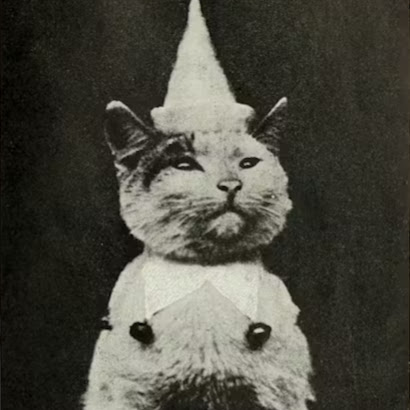
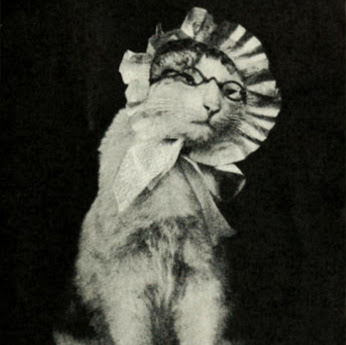

Reginald Fluffbottom, Chief Nap Officer and Dust Bunny Deterrent Specialist
Reginald, in his role as Chief Nap Officer and Dust Bunny Deterrent Specialist, takes his duties very seriously. He's responsible for ensuring
optimal napping conditions throughout the household, which includes rigorous testing of all soft surfaces. He's also the first line of defense
against any and all dust bunnies, employing advanced pouncing and swatting techniques. Though he may seem a bit grumpy, he's a dedicated employee
who always puts the comfort and cleanliness of the home first.

Jester Jinx, Official Court Jester and Head of the "Surprise Meow" Department
Jester Jinx is the purr-fectly silly cat who's always ready to make you laugh! As the Official Court Jester, she wears her pointy hat with pride
and loves to perform hilarious antics. She's also in charge of the "Surprise Meow" Department, where she specializes in popping out of unexpected
places and giving playful little meows. Sometimes she'll hide behind curtains, sometimes she'll jump out of boxes, but she always manages to bring
a smile to everyone's face.
Snowball Snugglesworth, Primary Blanket Inspector and Warmth Keeper
Snowball Snugglesworth isn't just your average cuddly cat, he's a silent observer of the household's secrets. He moves like a shadow, disappearing
into blankets and reappearing in unexpected places. He rarely meows, preferring to communicate in subtle blinks and gentle nudges, his true
intentions always shrouded in mystery. He seems to know things, things he shouldn't know. He watches, he waits, and he warms, a silent cuddlebug in
a fluffy coat.

Miss Penelope Whiskers, Tea-Time Supervisor and Yarn Analyst
Miss Penelope Whiskers is a very proper and sweet kitty. She loves nothing more than a good cup of catnip tea and a cozy nap with a ball of yarn.
As Tea-Time Supervisor, she makes sure everyone has a calming break, and as Yarn Inspector, she checks all yarn for softness and quality. She wears
her little bonnet and glasses because she says they help her see the best yarn colors and keep her fur out of her tea. She's a gentle soul with a
love for all things cozy and comforting!